1個 500 ペンネ
目次 > ゲームについて > 日本Falcom 攻略 > ZWEI II > アイテム一覧 > フード
らんの眼
ZWEI II (ツヴァイ 2、ZWEI II Plus)
| 概要 | 情報 | 攻略チャート |
| フード交換 | ペットについて | ボス戦 |
| 敵キャラ一覧 | ハンターランク | G-コロッセオ |
| アイテム一覧 | ガジェット一覧 | トレジャー一覧 |
| ダンジョン一覧 | クリアデータ特典 | Plusの追加要素 |
| ZWEI II攻略へ | 目次へ戻る |
| [ 武器、魔法 ] [ 防具 ] [ アクセサリー ] [ イベントアイテム ] [ フード ] |
| 名前 | 画像 | 回復量 | 経験値 | 備考 |
| かっぱ巻き | 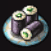 | 5 | 4 | |
| ミートボール | 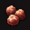 | 6 | 5 | |
| ししゃも | |
7 | 7 | |
| 穴あきチーズ | |
8 | 10 | |
| 卵 | 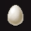 | 9 | 14 | |
| キウイ | 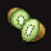 | 10 | 19 | |
| シュウマイ | 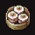 | 11 | 25 | |
| しめじ | |
12 | 32 | 奥義ポイントは得られません |
| キャンディー | 13 | 40 | ||
| どら焼き | |
14 | 49 | よく見るとこぼるとの焼き印が・・・ |
| 高麗人参 | |
0 | 100 | 行商人 <<カラス>>、万屋本舗 <<ヒコメ>> で購入可能 1個 500 ペンネ |
| 名前 | 画像 | 回復量 | 経験値 | 備考 |
| 名前 | 画像 | 回復量 | 経験値 | 備考 |
| 七草かゆ |  |
15 | 60 | |
| 生ハム | 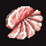 | 16 | 75 | |
| アジの開き | 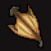 | 17 | 105 | |
| ピザ |  |
18 | 150 | |
| 焼き鳥 | 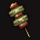 | 19 | 210 | |
| マンゴー | 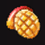 | 20 | 285 | メロンパンにも見える |
| チャーハン |  |
21 | 375 | |
| しいたけ | 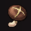 | 22 | 480 | 奥義ポイントは得られません |
| チョコレート |  |
23 | 600 | カカオの割合は33% |
| 栗ようかん | 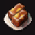 | 24 | 735 | |
| 冬虫夏草 | 0 | 1500 | 行商人 <<カラス>>、万屋本舗 <<ヒコメ>> で購入可能 1個 7000 ペンネ |
|
| 名前 | 画像 | 回復量 | 経験値 | 備考 |
| 名前 | 画像 | 回復量 | 経験値 | 備考 |
| カレーライス |  |
25 | 900 | |
| ハンバーグ |  |
26 | 1125 | |
| うなぎの蒲焼 |  |
27 | 1575 | アルッテ風ってどんな味でしょうね |
| カルボナーラ | 28 | 2250 | ||
| ターキー |  |
29 | 3150 | |
| パイナップル |  |
30 | 4275 | |
| ワンタンメン |  |
31 | 5625 | |
| エリンギ | 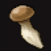 | 32 | 7200 | 食べても奥義ポイントは得られません。 Zwei !! に出てこなかったエリンギですが、当時(2002 年)は今ほど知名度はなかったような・・・ |
| ショートケーキ |  |
33 | 9000 | |
| 白玉ぜんざい | 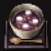 | 34 | 11025 | 個人的にすごく食べたいです |
| まんどらごら | 0 | 22500 | 行商人 <<カラス>>、万屋本舗 <<ヒコメ>> で購入可能 1個 100000 ペンネ Zwei !! に「まんどら」というモンスターがいましたが、まさかソイツの干物では・・・ |
|
| 名前 | 画像 | 回復量 | 経験値 | 備考 |
| 名前 | 画像 | 回復量 | 経験値 | 備考 |
| 海鮮丼 |  |
35 | 13500 | |
| すきやき | 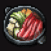 | 36 | 16875 | 上を向いて・・・ |
| 鯛の塩釜焼き |  |
37 | 23625 | イルバードに板前っているんですか? |
| グラタン |  |
38 | 33750 | |
| フォアグラ | 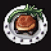 | 35 | 47250 | フォアグラってパンに塗るものなんですか・・・知らなかった |
| ドリアン | 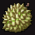 | 40 | 64125 | |
| フカヒレスープ |  |
41 | 84375 | |
| まつたけ |  |
42 | 108000 | 食べても奥義ポイントは得られません |
| パフェ | 43 | 135000 | ||
| 銘菓あるって |  |
44 | 165375 | ピピロとポックルもこれを買ったのでしょうか |
| 竜骨 | 0 | 337500 | 妖精の店 <<フェアリーショップ>> で購入可能 1 個 1500000ペンネ Zwei !! の「アメ」って竜骨入りだったのでは・・・ |
|
| 名前 | 画像 | 回復量 | 経験値 | 備考 |
| [ 武器、魔法 ] [ 防具 ] [ アクセサリー ] [ イベントアイテム ] [ フード ] |
| 概要 | 情報 | 攻略チャート |
| フード交換 | ペットについて | ボス戦 |
| 敵キャラ一覧 | ハンターランク | G-コロッセオ |
| アイテム一覧 | ガジェット一覧 | トレジャー一覧 |
| ダンジョン一覧 | クリアデータ特典 | Plusの追加要素 |
| ページの上部へ | ZWEI II 攻略へ | 目次へ戻る |